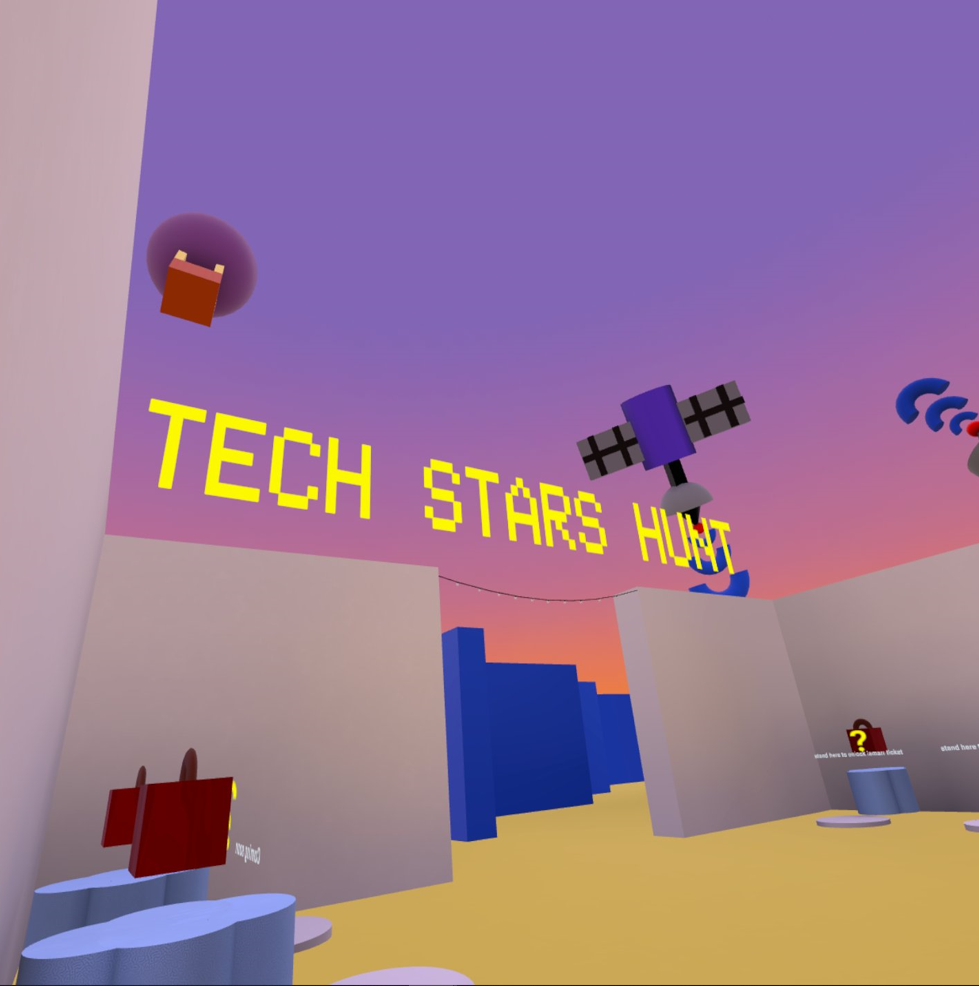
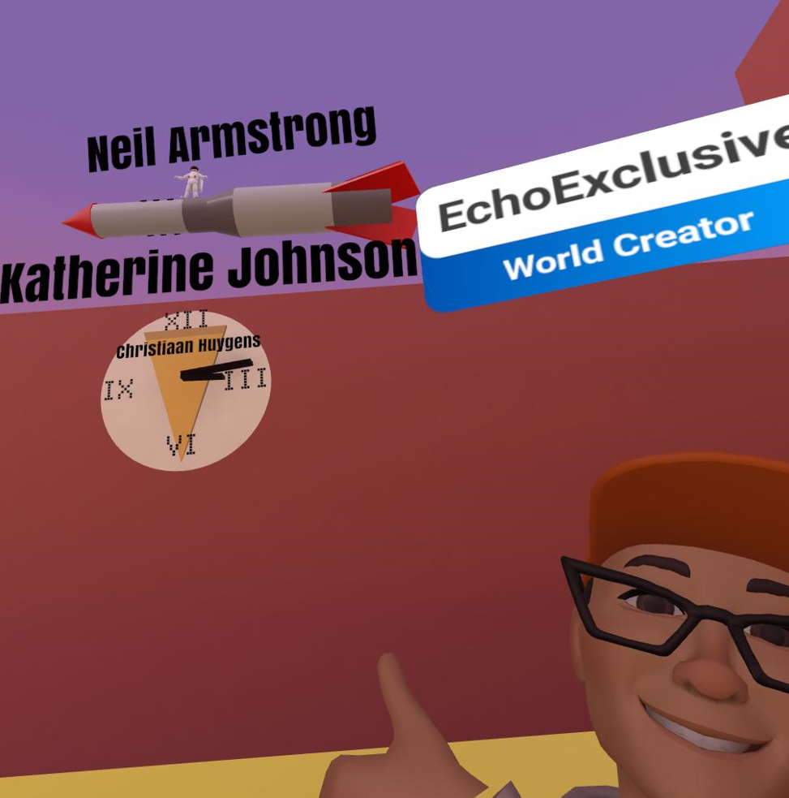
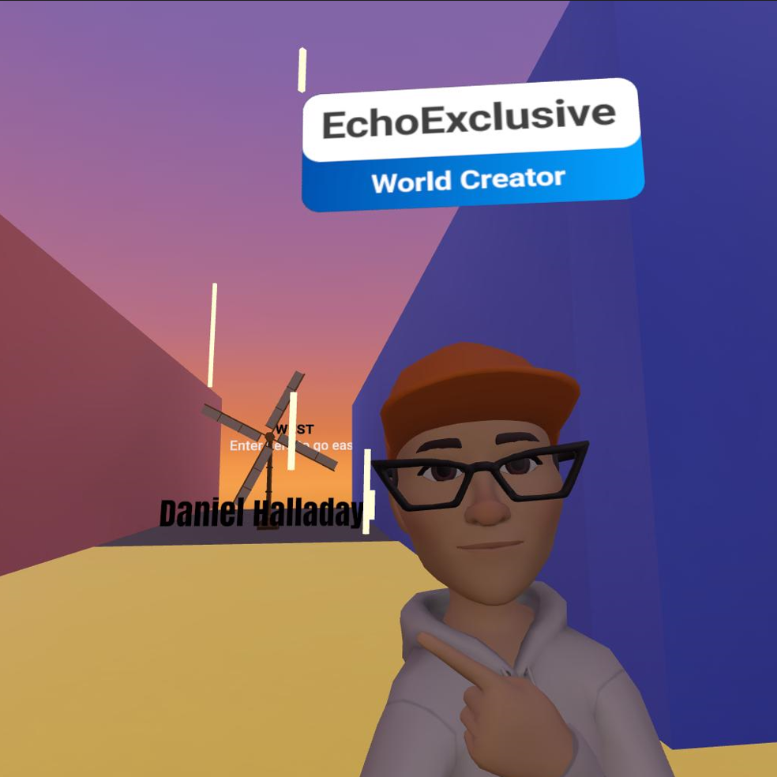

Tech Stars Hunt
>
3 games in 1. Collect star tickets to unlock mystery boxes to learn tech history, walk around to see how many names you recognize or figure out which game the shape of this maze is based on!Meta Quest 2CodeblocksHorizon WorldMay 2022-June 2022Horizon world competition - theme: Adventure.Go into a VR headset and create a world using code blocks. Get use to coding in a headset for long period of time, understand how to use the assets. Learn from horizon world tutorialsI knew I wanted to do a tech history learning adventure. To get use to coding in a VR headset for long periods of time, I would increase my time in a headset by 10minutes. I had ideas of making "mystery boxes" and when the user collides with the boxes, it will open up and show a piece of tech history. Instead of getting everything to work and look good, I tried to get the collision working first. Once I got that to work, I added another level to it, instead of only colliding with the box, I have to collect star tickets, these tickets were keys to opening the mystery boxes. Since I already learned how collision works, setting up collision with the star keys was much easier. After all the main functionalities was implemented, it was time to make it look good. so I decided to use a maze, but not just any maze- a (spoiler alert) pacman shaped maze! And if anyone recognize the shape of the maze, I encouraged them to take a picture and share what they think the maze shape is based on.

Just having boxes, stars and a maze felt boring. Therefore, I started placing objects around the world that showed tech history with the name of the person on it. This allowed users to not only look for star tickets but just casually explore the world and challenge themselves to see how many names they recognize.


I was one of the winners under the category START BUILDER TRACK Special Award 2